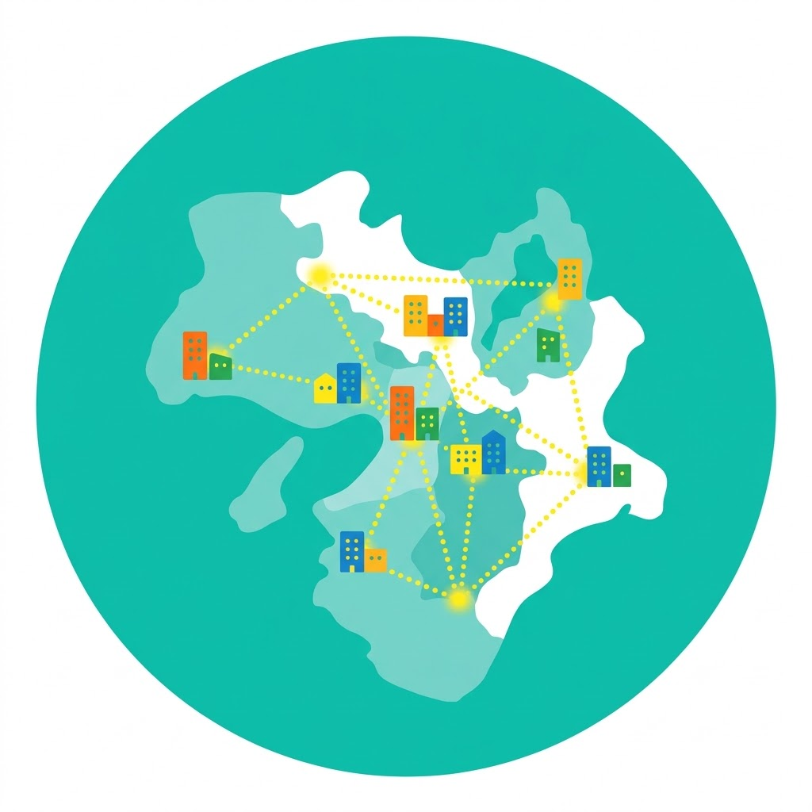

01
01
採用課題の整理
どんな人が必要かを、一緒に言葉にします。仕事内容・人物像・条件を整理し、求人票づくりも支援します。
RECRUITMENT PARTNER / OSAKA
採用は、出会いの設計から。
採用の課題を一緒に整理し、合う人をリサーチして、紹介する。
大阪の中小企業の採用を、最初から最後まで支えます。
PROBLEM
SERVICE
採用の課題整理から、人材のリサーチ、紹介、入社後まで。ひとつの窓口で支えます。
01
どんな人が必要かを、一緒に言葉にします。仕事内容・人物像・条件を整理し、求人票づくりも支援します。
 02
02
登録者の中から選ぶだけでなく、条件に合う人へこちらから声をかけます。面談で、経験と人柄の両方を確かめます。
 03
03
推薦の理由を添えてご紹介し、面接の調整から内定後の条件のすり合わせ、入社後の定着まで見守ります。
WHY US

地域と業界を知っているから、求人票に書ききれない魅力まで求職者に伝えられます。
職種を絞ることで、登録者の層が厚く、早く合う人を見つけられます。
すべての求職者と面談し、経験だけでなく、社風に合うかまで考えて紹介します。
NUMBERS
※数字はすべて仮置きです(制作サンプル)。定着率は入社後1年時点を想定しています。
FLOW
CASE
※掲載している事例は、制作サンプル用に作成したものです。
CONTACT
「何から相談すればいいか分からない」段階でも大丈夫です。採用の課題を一緒に整理するところから始めます。